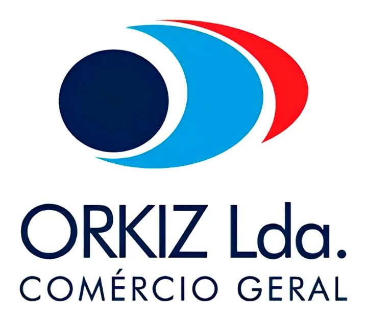
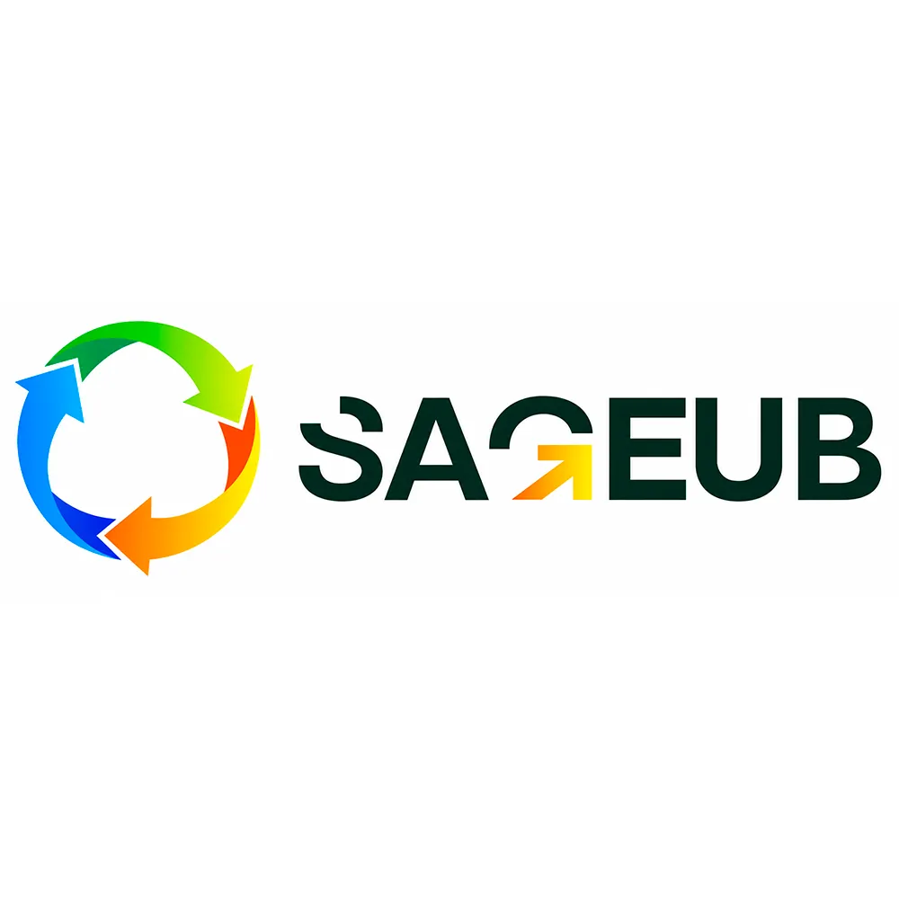

01
Marketing e Publicidade
Planeamos campanhas para lançar produtos, promover serviços e gerar oportunidades comerciais. Definimos o público, a mensagem e os canais de acordo com o objectivo da campanha.
Pedir proposta ↗



A Mark Seller é uma agência angolana de comunicação, marketing e publicidade. Ajudamos empresas e instituições a definir o seu posicionamento, criar campanhas e chegar aos públicos que influenciam as suas vendas e a sua reputação.

 100% angolana
100% angolanaSobre a Mark Seller
Reunimos profissionais de comunicação, marketing, jornalismo e relações públicas para dar consistência à forma como a sua marca se apresenta. Da identidade visual a uma campanha publicitária, alinhamos a mensagem, o design e os canais com os objectivos do seu negócio.
Serviços
Planeamos campanhas para lançar produtos, promover serviços e gerar oportunidades comerciais. Definimos o público, a mensagem e os canais de acordo com o objectivo da campanha.
Pedir proposta ↗Apoiamos a sua organização na relação com os órgãos de comunicação social. Preparamos mensagens institucionais e identificamos oportunidades para dar visibilidade às suas iniciativas.
Pedir proposta ↗Apoiamos profissionais, executivos e figuras públicas na gestão da sua imagem e no planeamento da sua presença pública.
Pedir proposta ↗Criamos e renovamos marcas. Definimos o posicionamento, a identidade visual e o tom de voz para que a sua empresa seja reconhecida em cada ponto de contacto.
Pedir proposta ↗Planeamos conteúdos, gerimos a publicação e acompanhamos o desempenho para perceber o que desperta interesse, gera interacção e traz pedidos de contacto.
Pedir proposta ↗Desenvolvemos soluções de design para produtos físicos e digitais, desde o conceito até à apresentação, com atenção à funcionalidade e à experiência de utilização.
Pedir proposta ↗Como trabalhamos
Começamos por compreender o negócio, o público e o resultado esperado. Definimos o que comunicar, onde fazê-lo e como avaliar o desempenho. Acompanhamos a execução e ajustamos as acções com base na resposta do público.
O negócio, o público e o resultado esperado.
O que comunicar, onde fazê-lo e como avaliar o desempenho.
Acompanhamos a execução de cada acção.
Melhoramos com base na resposta do público.
Projectos
Clientes
Conheça algumas das marcas e organizações que escolheram a Mark Seller para desenvolver os seus projectos de comunicação, marketing e publicidade.
MARK DECORMÔ JOGOSKIYAMATA O CÓDIGO QUER ACESSO?
O CÓDIGO QUER ACESSO?Vídeo
Veja spots publicitários, produções audiovisuais e projectos que mostram como uma ideia ganha forma em imagem, som e narrativa.
Visitar o canal↗Blog
Artigos sobre comunicação, publicidade e marketing, com ideias práticas para quem gere marcas e negócios em Angola.


Contacto
Escreva-nos, ligue ou marque uma conversa. Conte-nos o que pretende alcançar e em que fase está o seu projecto.